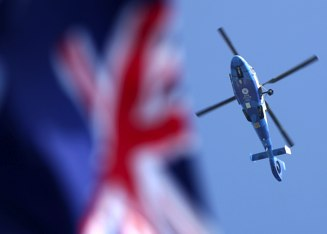
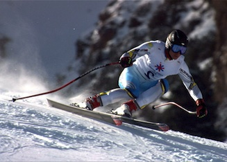
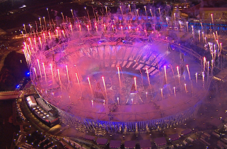
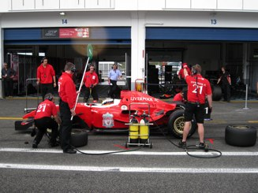

- Bruce Sabin is the Director of iProductions Limited.
- He is a professional Lighting Television Cameraman with 28 years experience in Outside Broadcast, Single Camera & Studio Productions.

Beijing Olympics: Sailing Qingdao
- A specialist in Aerial Camerawork especially the Cineflex HD & remote camera operations.

Asian Winter Games: Alpine Skiing Shymbulak

London Olympics 2012
- Based in the UK working for a wide variety of Broadcast & Facilities clients at home & abroad.
- An efficient, dedicated professional who is also flexible and enthusiastic.

Superleague Formula: Estoril
- Bruce's experience is acquired from working with all types of people and every type of production in Television.